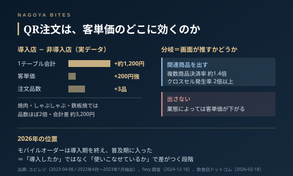

業界の裏側
栄の居酒屋のQR注文、業界人が読む客単価の分かれ目
卓にQRコードが置かれる居酒屋は、栄で飲んでいればもう珍しくない。導入すれば客単価が上がる、と語られがちだが、事業者データを並べると話は単純ではない。ある調査は「業態によっては客単価が下がる可能性もある」と明記している。何が上がる店と下がる店を分けているのかを、業界人の目で読む。

この記事はNAGOYA BITES — 名古屋の厳選1,100店超を業界視点で紹介するグルメガイドの一部です。
栄で飲んでいると、卓に置かれた紙のQRコードを読み込むところから始まる店が、もう珍しくなくなった。2026年8月時点で、この種のセルフオーダーは「先進的な店の試み」ではなく、居酒屋の標準装備に近い位置にある。
業界では長く「QRを入れると客単価が上がる」と語られてきた。実際、あるPOS事業者が導入店と非導入店を比べた実データ（2022年4月〜2023年1月抽出）では、1テーブルあたりの会計金額で約1,200円、客単価で200円強の差がついている。注文品数は平均で3品多い。焼肉・しゃぶしゃぶ・鉄板焼のように追加注文が構造的に多い業態では、品数はほぼ2倍、会計差は約3,200円まで開く。
ところが同じモバイルオーダーについて、別の調査は「業態によっては客単価が下がる可能性もある」と明記している。理由は単純で、店員が卓で「もう一杯いかがですか」と勧める動作が消えるからだ。この調査では、注文画面に関連商品を出した期間の複数商品決済率が約1.4倍、クロスセル発生率は2倍以上に上がっている。裏を返せば、画面が何も推さない店では、その分がまるごと失われている。
ここが業界人の読みどころになる。卓上の追加提案は、人件費として計上される動作であると同時に、売上をつくる装置でもある。QR導入で人件費を削るとき、多くの店は同じ動作で売上装置のほうも削ってしまう。上がる店と下がる店を分けているのは端末の有無ではなく、削った提案を画面が肩代わりしているかどうかの一点だ。
導入する側の一次資料も、実はそこを約束していない。直近では2026年8月6日にも大型施設へのモバイルオーダー導入が発表されているが、効果として挙げられているのは行列の解消と混雑緩和であって、客単価ではない。業界の分析でも、モバイルオーダーは導入期を終えて普及期に入ったとされ、差がつくのは入れたかどうかではなく使いこなせているかどうかだと整理されている。
客の側の感覚も忘れないほうがいい。自分のスマホのバッテリーとデータが減る、個人の端末を同席者に渡したくない、小さい画面ではメニュー全体を見渡せない。QR注文への抵抗には具体的な理由がある。一方で消費者調査では、こうした仕組みを置く店への印象は「良い」が61.4%、「悪い」は3.1%にとどまる。嫌われているのは仕組みそのものではなく、紙メニューを完全に引き上げてしまう運用のほうだ。
飲む側の実務としては、こう考えておくといい。栄でQRの店に入ったら、その卓では誰も勧めてこない。頼み忘れは自分の責任になるが、逆に言えば予算はこちらで完全に管理できる。一人飲みや気心の知れた相手なら、むしろ静かで都合がいい。接待や顔合わせで使うなら、幹事役が一人で注文係を背負う形になるため、紙メニューを併用している店を選んでおくほうが安全だ。
Inside Perspective — 業界人の目利き
- QRで削る人件費には、卓上の追加提案という売上装置が含まれている。削った提案を画面が肩代わりしない店は、単価が上がらないどころか下がる
- 効きやすいのは追加注文が構造的に多い業態。焼肉・しゃぶしゃぶ・鉄板焼では会計差が約3,200円まで開く一方、コース主体の店では数字が動きにくい
- 接待や顔合わせでQRの店を選ぶと、幹事が一人で注文係を背負うことになる。紙メニュー併用の有無を先に確認しておくといい